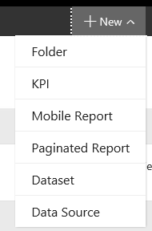
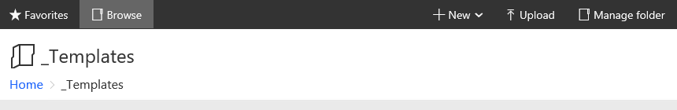
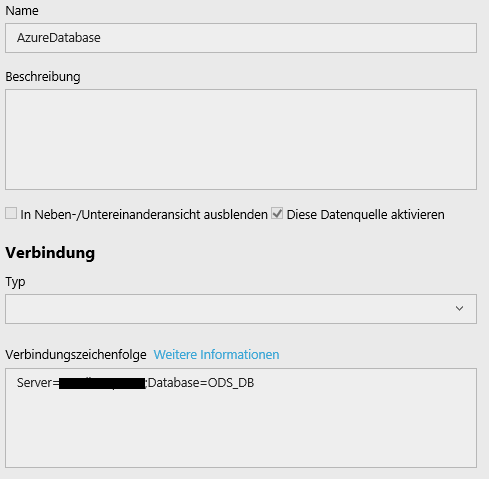
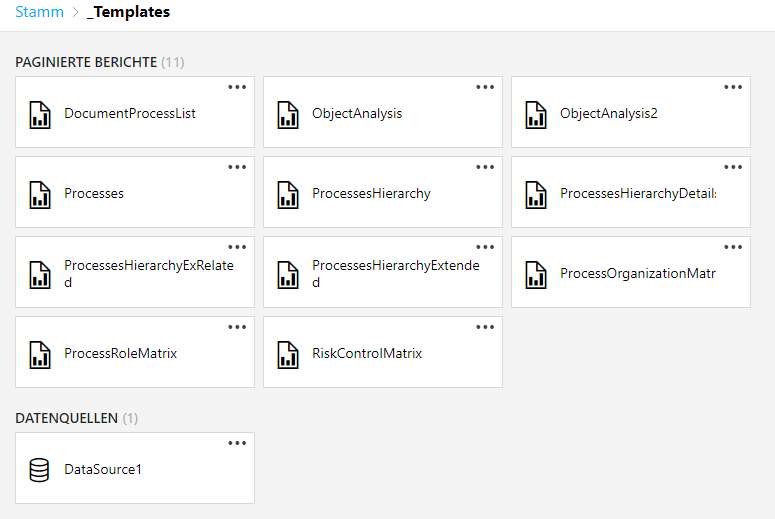

SSRS Reports
Before you proceed with the further steps you should ensure that you have the latest report files in the SSRS folder you will use as template folder. For this step it is necessary to at least have the SSRS initially configured (vanilla) to access its web portal. Of course you will need a user who has the appropriate rights to upload the reports.
Deploy the latest reports via SSRS web portal
You should have the latest versions of the reports available, e.g. the artifacts of the latest SSRS deployment. So, there should be a folder containing the RDL files.
If you have acquired the folder, use the browser to navigate to your SSRS web portal.
Once you have got there, create the folder which will contain the report templates. In our documentation we recommend to use a folder named "_Templates" where the reports are placed in.
To create it , navigate to the SSRS root path and use New -> Folder.
Name it "_Templates".

After you have done that navigate to that newly created folder and start uploading the templates. Use the Upload functionality and upload every report you want to use.

Once this is done use New -> Data Source. You may now provide a correct connection string and credentials for the data source.

The most important thing here is to connect the reports to that newly created data source. If you are not doing this, you may have to adapt your data source settings after setting up the whole reporting chain in the tenant folder. If there are question regarding data source configuration, please refer to the SSRS documentation.
After you have done all the above your "_Templates" folder should look similar to this picture.
